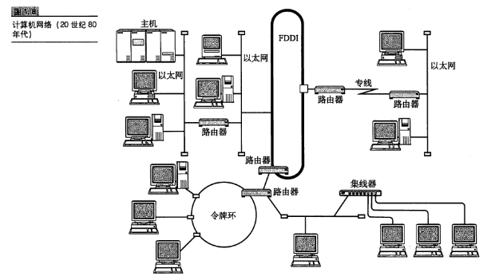

网络基础知识
计算机网络出现的背景
计算机的普及与多样化
从独立模式到网络互连模式
从计算机通信到信息通信
就是从几台计算机之间的连接发展到，终端设备不只是计算机，网络规模也更复杂庞大
计算机网络的作用
从通信的角度看待计算机网络，更准确的说从通信的物理介质角度，空气，各种通信电缆，就在我们身边，挥一挥闭上眼感受空气中的电波
计算机与网络发展的7个阶段
计算机网络从20世纪50年代才开始普及，仅仅不到70年，已经发生了翻天覆地的变化
批处理
单任务的单用户的批处理计算机，（应该不能叫操作系统吧？）
分时系统
分时系统（TTS)的出现，多用户多任务的操作系统，示意图
分时系统与COBOL，BASIC，FORTRAN等高级语言相互促进发展，使得计算的易用性，高效性有了很大的提升，在办公场所工厂等逐渐引入计算机辅助办公，客观上加速了网络（通信）的发展
计算机之间的通信
区分计算机之间互联，和计算机与使用终端之间的互联【注意终端是当时语境下的终端】
计算机间的通信显著地提高了计算机的可用性，体现在可以将计算任务拆分，使用多台计算机分布式的处理计算任务。
一个实例，一家公司可以不局限于使用一台计算机处理，可以为各部门配备合适数量的计算机来处理内部数据，最后由通信线路汇总到总部计算机统一处理得到最终结果
计算机网络的产生
不同类型的计算机组网 一种计算机网络构成实例（20世纪80年代）示意图
窗口系统的产生，是的计算机网络的易用性提高，使用计算机网络的实例
窗口系统与计算机网络示意图

互联网的普及
个人计算机的普及，网络应用的兴起比如E-mail,WWW等信息传播技术，需要各种不同计算机厂商的设备能够成本更低的互联组网，个人PC的组网
以互联网技术为中心的时代
各种电子设备的组网（物联网）
从“单纯的建立连接”到“安全的建立连接”
手握金刚钻的TCP/IP
融合实现统一各种独立发展的网络通信技术，TCP\IP协议栈
协议
随处可见的协议
协议的必要性
协议如同人与人的对话
计算机中的协议
分组交换协议
分组交换就是将大数据分成小包传输。这样看分组交换更像是一种更高一层的设计思想
x协议有谁规定
计算机通信的诞生及其标准化
1975年左右，各大厂商发布自己的网络体系结构和各种协议互不兼容，直接的影响是，即使两台异构的计算机在物理层面上能够连接在一起，但是支持的协议不同仍然不等通信
协议的标准化
ISO推荐OSI七层模型，实际应用的是IETF的推进的TCP\IP模型
三类标准化组织，国际标准化机构如ISO,ITU-T等，国家标准化机构如ANSI，民间组织如IETF等
协议分层与OSI参考模型
协议的分层
{kind=link}
通过对话理解协议
OSI参考模型
OSI参考模型中个分层的作用
OSI参考模型通信处理举例
7层通信
会话层以上的处理
传输层一下的处理
传输方式的分类
面向有连接型和面向无连接型
通过网络发送数据分为，面向连接和面向无连接
面向有连接：需要在收发双方建立物理和逻辑上的通信链路。类比：接打电话的双方
面型无连接：无需确定接收方是否存在，是否准备好。类比邮寄物品
电路交换与分组交换
根据通信线路行驶分类：
电路交换 线路独占
分组交换：大数据块分包，在一条线路上供多人使用，类似于CPU的时间片
分组交换示意图 
分组交换与电路交换特点对比示意图

根据接收端数量分类
单播（Unicast）实例：固定电话
广播（Broadcast）实例：电视信号的收发，广播域
多播（Multicast）特定组内通信
任播（Anycast)特定组内的任意的一台计算机